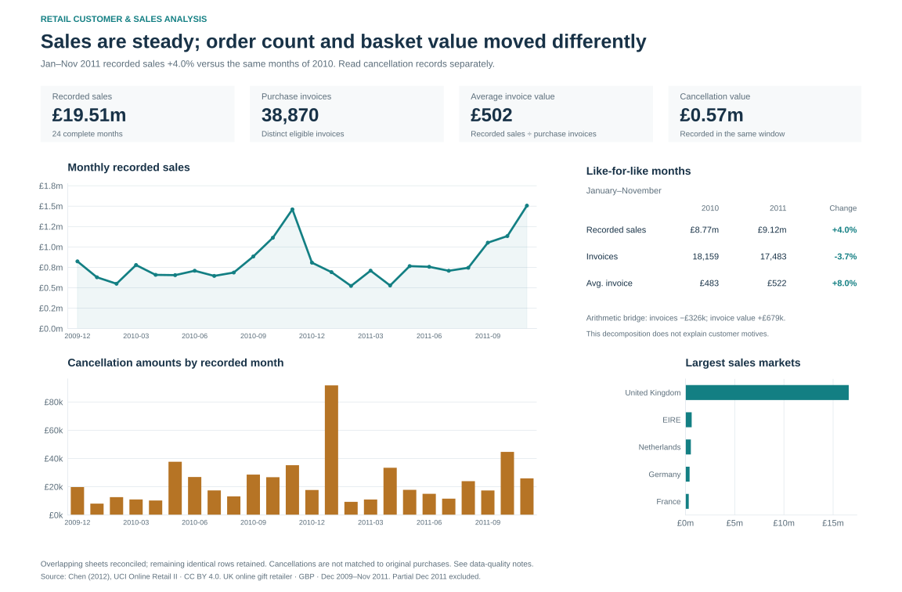
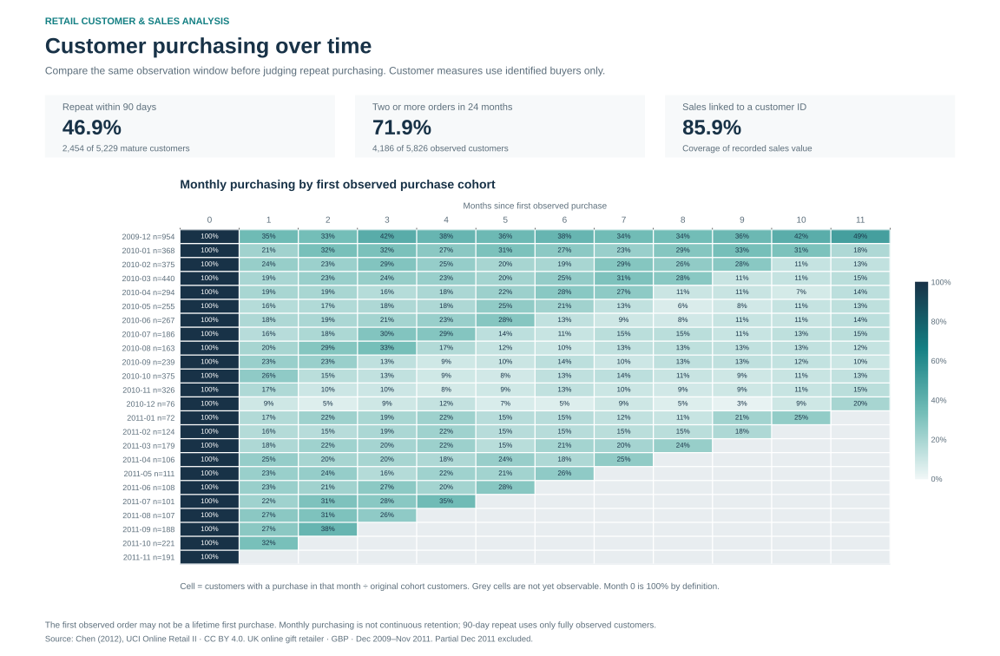
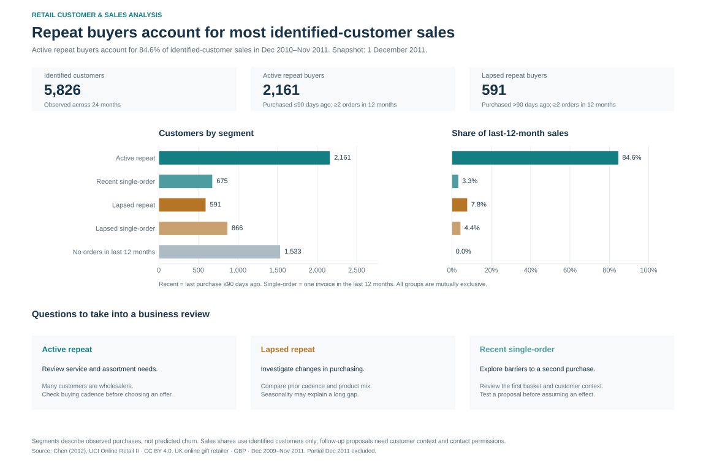

Recorded sales use eligible positive purchase lines. Cancellation amounts are shown separately. Overlapping sheets are reconciled; remaining identical rows are retained. See the methodology and sensitivity analysis.
Open full-size sales chart
The first purchase is the first observed in this dataset. The 90-day measure includes only buyers with a complete observation window. Each heatmap cell measures purchasing in that month, not uninterrupted retention.
Open full-size repeat-purchasing chart
Segments use a fixed 1 December 2011 snapshot. Customer counts cover identified buyers observed over 24 months; sales shares use their last 12 months of purchases. The proposed investigations are not measured campaign results.
Open full-size customer-priorities chart